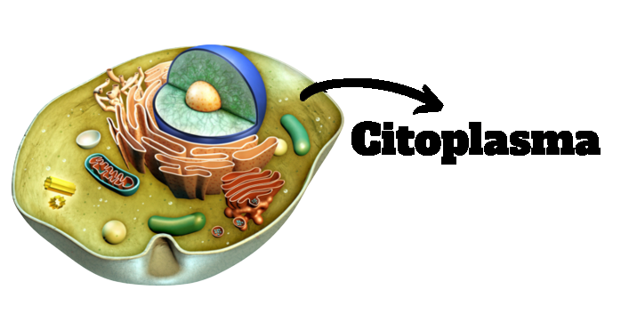

Projeto integrador
Assuntos
Citoplasma
Citoesqueleto
Cinesina
Ciclose
Integrantes
Citoplasma
Citoplasma
O citoplasma compõem as células, juntamente com a membrana plasmática e o material genético, sendo o espaço intracelular que representa a região entre a membrana plasmática e o envoltório nuclear nas células eucariontes.
É no citoplasma que encontramos o núcleo e as organelas, além de outras estruturas com funções específicas. 
Características do citoplasma
O citoplasma serve como abrigo para o citoesqueleto, as organelas citoplasmáticas e algumas substâncias contidas ali de maneira temporária, como proteínas, lipídios e pigmentos.
É possível observar no espaço entre as substâncias contidas, a matriz citoplasmática que é também hamada de citosol, que por sua vez é uma substância de consistência variável
Composição do citosol
O citosol pode ser dividido em duas partes sendo essas partes o endoplasma e o ectoplasma.
O ectoplasma apresenta uma consistência mais gelatinosa já o endoplasma tem uma concentração fluida e se localiza mais internamente na célula
A principal substância que compõe o citosol é a água mas ele tabem é composto por aminoácidos, proteínas, íons e RNA.
Funções do citoplasma
Proporcionar o ambiente adequado para reações bioquímicas;
O acúmulo de substâncias que são necessárias para o organismo. Também o acúmulo de energia em forma de glicogênio;
Promover a troca de substâncias na célula;
Possibilitar o movimento da célula, como a movimentação por pseudópodes
(prolongamentos temporários do citoplasma), locomoção por cílios e flagelos.
Corrente citoplasmática
Em células vegetais podemos observar o movimento do citoplasma, este fenômeno é chamado de Corrente citoplasmática. Neste fenômeno todas as organelas são movidas pelas correntes que são geradas por microfilamentos, para esse fenômeno acontecer ocorre gasto de energia.
A seguir:
Vídeo explicativo sobre
Citoplasma